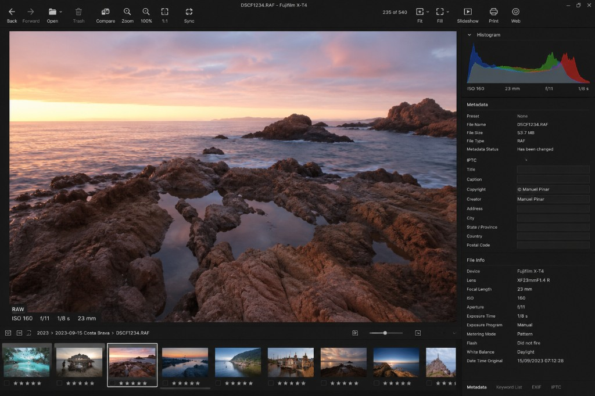

How to Verify RAW Files
RAW files are the digital negatives of modern photography. They hold the maximum amount of image data your camera can capture, and they are often irreplaceable. Yet RAW files can become corrupted, truncated or unreadable just like any other file, frequently without any visible warning.
This guide explains how to verify RAW files such as NEF, CR2, ARW and DNG before you archive them, so silent corruption never spreads across every backup you own.

Why RAW Files Need Verification
Many photographers assume that if a RAW file copies successfully, it is safe. In reality, the copy process only confirms that the bytes were transferred, not that the RAW data inside can still be decoded into an image.
A damaged RAW file may still show:
- The correct filename and extension
- The expected file size
- A valid embedded JPG preview thumbnail
- Normal metadata in your catalog
The embedded preview is especially deceptive: a file browser or catalog may display a perfectly normal thumbnail while the actual RAW image data behind it is already damaged. For background on why this happens, see What Is Bit Rot?
RAW Formats You Should Verify
Each camera manufacturer uses its own RAW container. The most common are:
- NEF: Nikon
- CR2 / CR3: Canon
- ARW: Sony
- DNG: Adobe Digital Negative (used by many cameras and converters)
- RAF: Fujifilm
- ORF: Olympus / OM System
- RW2: Panasonic
Whatever format you shoot, the principle is the same: the file must be opened and decoded, not just checked by name, size or thumbnail.
How RAW Corruption Happens
RAW files can be damaged at many points in a photography workflow:
- Removing a memory card during a write operation
- A failing or counterfeit memory card
- Interrupted transfers from card to computer or NAS
- Aging hard drives and SSD degradation
- Bit rot in long-term archives
- Power loss or crashes during import or editing
Because RAW files are large and archived for years, problems often surface long after the original card has been reused or the shoot can no longer be repeated.
Step-by-Step: Verify Your RAW Files
Use this workflow whenever you import or archive RAW photos:
- Verify on import: check RAW files right after copying them from the memory card, while the card is still intact.
- Open and decode each file: confirm the RAW data is readable, not just the embedded preview.
- Review flagged files: identify corrupted, suspicious or truncated RAW files.
- Re-copy from the card: if a file failed and the card is still available, copy it again before formatting.
- Archive only verified files: back up to NAS, cloud or external drives once you know the RAW data is intact.
- Re-check periodically: run integrity scans on long-term RAW archives, not just on new imports.
Manual Checks vs Automated Verification
You can open RAW files one by one in Lightroom, Capture One or your camera manufacturer's software. This works for a handful of files, but a single shoot can produce hundreds of RAW images and an archive can hold hundreds of thousands.
Automated verification opens and decodes every RAW file read-only and reports which ones are healthy and which need attention, far faster and more reliable than manual spot checks. See How to Detect Corrupted Photos Before Backup for the broader workflow across all image formats.
What to Do When a RAW File Fails
- Check whether the original memory card still holds an intact copy
- Look for an earlier backup made before the corruption appeared
- Do not overwrite the damaged file until you confirm a healthy replacement
- Keep the embedded JPG preview if the RAW data is unrecoverable; it may be your only surviving image
- Document the loss in a report for clients or your own records
How Check Your Backup Helps
Check Your Backup was designed for photographer RAW workflows. The software:
- Opens and decodes NEF, CR2, ARW and DNG files read-only
- Verifies entire RAW archives recursively
- Flags corrupted, truncated and unreadable RAW files
- Also checks JPG, JPEG, TIFF, TIF and PNG
- Generates PDF and CSV integrity reports
- Never modifies or uploads your files
All analysis runs locally on your Windows or macOS computer. Your RAW files stay on your machine throughout the entire process.
Conclusion
RAW files are the foundation of a photography archive, and a successful copy does not guarantee that the image data inside is still valid. Verifying RAW files (opening and decoding each one before you archive it) is the most reliable way to protect work you cannot reshoot.
Verify on import. Decode every file. Archive only what you know is readable.
Download Check Your Backup
Verify your RAW files read-only before you trust your backup.
Download Free